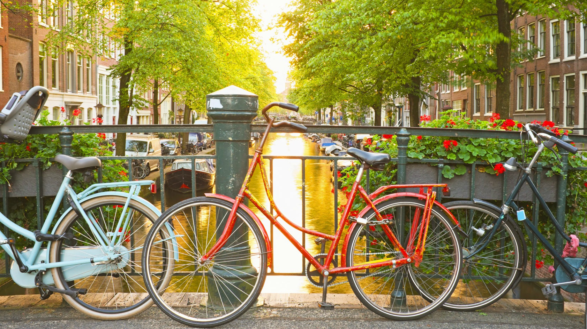
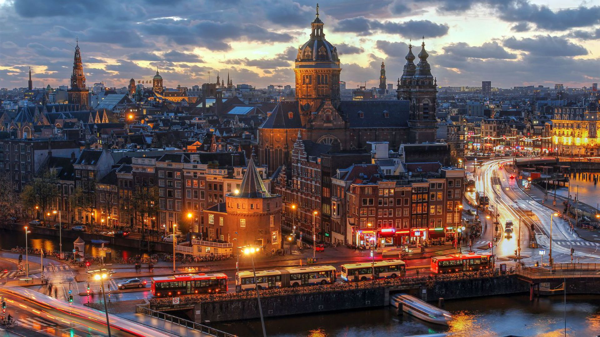
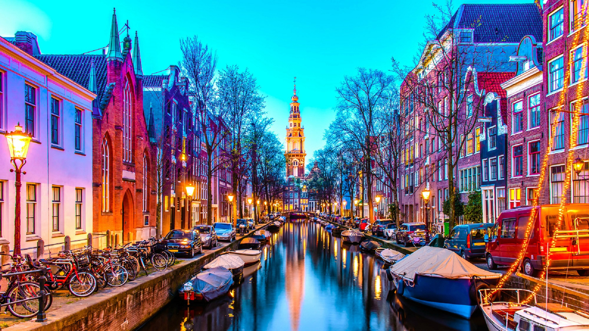
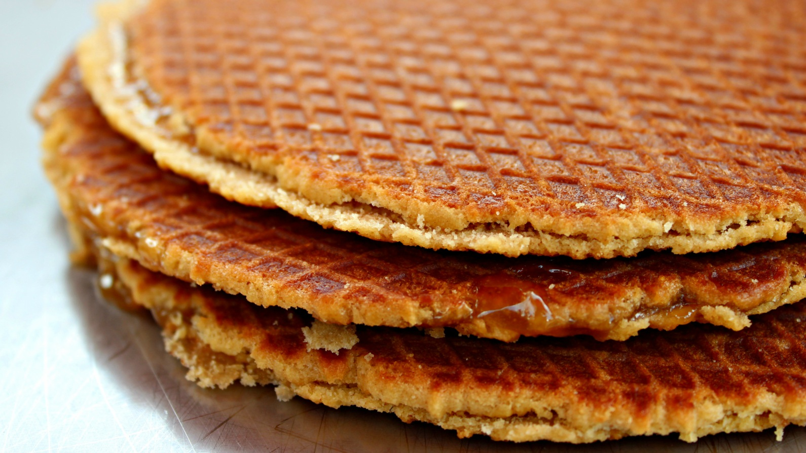
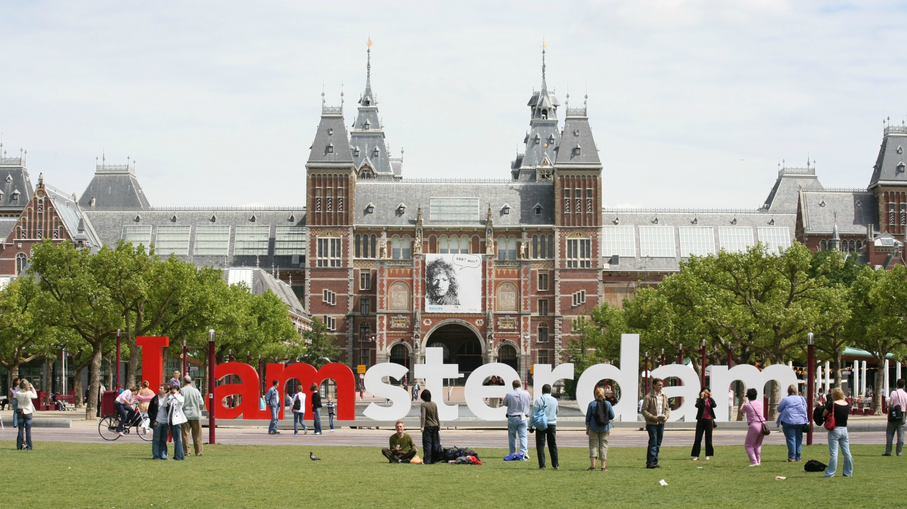

Amsterdam
1 / 5

Cycle Amsterdam's beautiful canals
2 / 5

De Oude Kerk in Amsterdam's City Center
3 / 5

The colors of Amsterdam
4 / 5

Stroopwafels - A delicious Dutch treat
5 / 5

I Amsterdam sign outside the Rijksmuseum
❮
❯
Thanks for reading my personal travel guide to Amsterdam!
On this page you will find an unordered list of my favorite things to do in this city! Be sure to check out the restaurant recommendations :)
Stuff to do!
- Rent a bike and ride around the city
- Keukenhof Gardens
- Red Light District (De Wallen)
- Leidseplein
- Rijksmuseum
- I Amsterdam Sign
- Dom Square
- Van Gogh Museum
- A'dam Lookout
- Canal Walking tour
- Canal Bout tour
- Check out Amsterdam's parks
- Cheese shops
- Albert Cuyp Market
FOOOD!
- Make sure you get kapsalon! - like Turkish Carne Asada Fries!
- Kartika - the greatest Indonesian food!
- Broodje Bert - nice sandwiches & salads!
- Van Stapele Koekmakerij - the besttt cookies!
- Vlaamse friethuis vleminckx - amazing fries!
- Dutch pancakes - like crepes but better!
- Lombardos - a nice burger!
- Bagels & Beans - bagels and coffee!
- Wok to walk - Chipotle-style Asian noodles!
- DO NOT GET PIZZA, unless it's
- Turkish Pizza!
- Omelegg- nice cheap omelettes!
- Winkel 43 - the best apple pie!
- Albert Heijn - supermarket where you can get your stroopwafels to take home!
Coffeeshops
- Easy Times
- Grey Area
- Dampkring
- Coffeeshop Amsterdam
- Barneys
- Internet Cafe Coffee Shop
- Prix d'Ami
- Kadinsky
- Abraxas
- Voyagers
- Amnesia
- Paradox
- AVOID Cafe Bulldog!
Alcohol & Partying
- Gall & Gall - for your liquor needs
- Brouwerij 't IJ
- Hoppe Cafe
- Melkweg
- Paradiso
- AIR